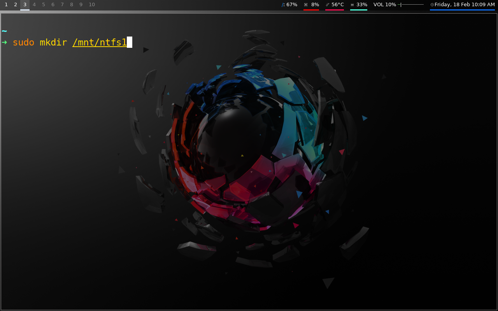

NTFS is the filesystem of Windows and if you're migrating from Windows to Linux, this article may be very useful to you because you might have some NTFS external storage drives.
In this article, we will show you how to do exactly that!
1. Download the necessary packages:
- fuse
- ntfs-3g
2. Now we'll make the folder in which we are going to mount our NTFS storage device.
3. Finally, we'll mount the NTFS filesystem. Replace /dev/sdb1 with your device name.